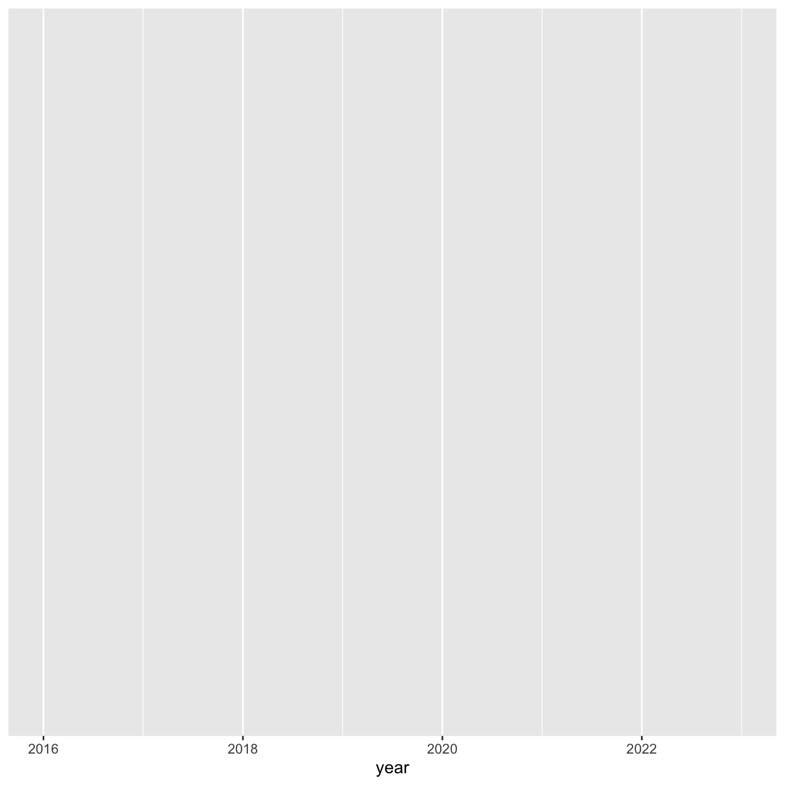

Content from Intro to Data Analysis
Last updated on 2024-05-24 | Edit this page
Overview
Questions
- How do we begin to analyze iNaturalist data?
Objectives
- Learn how to download data from iNaturalist
- Learn about the various ways to analyze data
iNaturalist data
When iNaturalist users add an observation through the iNaturalist app, that data is saved to the iNaturalist database. People can download the iNaturalist data as CSVs.
CSV is a text file format for tabular data. Each line represents one record. Each column represents a field. The fields are separated by commas.
The iNaturalist CSV has information about:
- the user who made observation
- the location of the observation
- the observed species
- links for photos, videos, sounds
Instructions to download iNaturalist data
Here’s a video that shows how to select and download data from iNaturalist.
To save time and ensure everyone at the workshop has the same data, here is a link to a CSV with iNaturalist City Nature Challenge Los Angeles data from 2013 to 2024.
More info about downloading iNaturalist observation data.
https://help.inaturalist.org/en/support/solutions/articles/151000169670
Analyzing data
It is difficult for people to see any patterns when reading rows after row of text. To make it easier to see patterns, we can use software to analyze tabular data.
Spreadsheet programs are computer application that people can use to view, edit, and analyze tabular data. The programs can do calculations and create charts. Examples include Excel and Google Sheets
Geographic information system (GIS) are computer application that people can use to view, edit and analyze geographic data. The programs can do calculations and create maps. Examples include ArcGIS and QGIS.
Programming languages allow people to write instructions to tell a computer to do stuff. We write these instructions in the form of code. We can write code to do calculations, create charts, and create maps. Example programming languages include R, Python, C.
This class uses R because it is a popular language in ecology research and other types of scientific research.
Example of analyzing iNaturalist data using R
Load software that will will need.
R
library(readr) # read and write tabular data
library(dplyr) # manipulate data
library(ggplot2) # create data visualizations
library(sf) # geospatial
library(lubridate) # manipulate dates
library(mapview) # create interactive maps
Load iNaturalist data from City Nature Challenge Los Angeles 2013-2023. There are over 170,000 observations.
R
inat <- read_csv("data/raw/observations-397280.csv")
OUTPUT
Rows: 171155 Columns: 39
── Column specification ────────────────────────────────────────────────────────
Delimiter: ","
chr (23): observed_on_string, time_observed_at, time_zone, user_login, user...
dbl (10): id, user_id, num_identification_agreements, num_identification_di...
lgl (5): captive_cultivated, private_place_guess, private_latitude, privat...
date (1): observed_on
ℹ Use `spec()` to retrieve the full column specification for this data.
ℹ Specify the column types or set `show_col_types = FALSE` to quiet this message.Get the 10 most commonly observed ‘species’.
R
top_10 <- inat %>%
filter(!is.na(scientific_name)) %>%
select(common_name, scientific_name) %>%
count(common_name, scientific_name, name='count') %>%
arrange(desc(count)) %>%
slice(1:10)
top_10
OUTPUT
# A tibble: 10 × 3
common_name scientific_name count
<chr> <chr> <int>
1 Western Fence Lizard Sceloporus occidentalis 2970
2 dicots Magnoliopsida 1978
3 Western Honey Bee Apis mellifera 1818
4 plants Plantae 1665
5 Fox Squirrel Sciurus niger 1323
6 flowering plants Angiospermae 1151
7 House Finch Haemorhous mexicanus 1122
8 Mourning Dove Zenaida macroura 1078
9 Convergent Lady Beetle Hippodamia convergens 840
10 House Sparrow Passer domesticus 838Create a bar chart showing the number of observations per year.
R
inat %>%
mutate(year = year(observed_on)) %>%
group_by(year) %>%
ggplot(aes(x = year)) +
geom_bar()

Create a map showing all the observations for Western Fence Lizard
https://www.ecologi.st/spatial-r/rdemo.html#converting-a-dataframe-into-a-spatial-object
R
inat_lizard <- inat %>%
filter(!is.na(latitude) &
!is.na(longitude) &
!is.na(scientific_name)) %>%
st_as_sf(coords = c("longitude", "latitude"), crs = 4326, remove=FALSE) %>%
select(id, user_login, common_name, scientific_name, observed_on, url, longitude, latitude, geometry) %>%
filter(common_name == 'Western Fence Lizard')
mapview(inat_lizard)

Content from Introduction to R and RStudio
Last updated on 2024-05-24 | Edit this page
Overview
Questions
- Why should you use R and RStudio?
- How do you get started working in R and RStudio?
Objectives
- Understand the difference between R and RStudio
- Describe the purpose of the different RStudio panes
- Organize files and directories into R Projects
What are R and RStudio?
R refers to a programming language as well as the software that runs R code.
RStudio is a software application that can make it easier to write and run code in R.
Think of R as English, and RStudio as Microsoft Word or Google Docs.
Both R and RStudio are: - free - cross platform: works on Mac, Windows, Linux - open source: allows anyone to use and modify the software
Navigating RStudio
RStudio puts most of the things you need to work in R into a single window, and also includes features like keyboard shortcuts, autocompletion of code, and syntax highlighting (different types of code are colored differently, making it easier to navigate your code).

In the above screenshot, we can see 4 “panes” in the default layout:
- Top-Left: the Source pane that displays scripts and
other files. You will write code into scripts and run code.
- If you only have 3 panes, and the Console pane is in the top left, press Shift+Cmd+N (Mac) or Shift+Ctrl+N (Windows) to open a blank R script, which should make the Source pane appear.
- Top-Right: the Environment/History pane, which shows all the objects in your current R session (Environment) and your command history (History)
- Bottom-Left: the Console pane, where you can interact directly with an R console, which interprets R commands and prints the results
- Bottom-Right: the Files/Plots/Help/Viewer pane to navigate files on our computer, view plots and view help pages
Getting set up in RStudio
RStudio provides a “Projects” feature that can make it easier to work on individual projects in R. We will create a project that we will keep everything for this workshop.
- Start RStudio (you should see a view similar to the screenshot above).
- In the top right, you will see a blue 3D cube and the words “Project: (None)”. Click on this icon.
- Click New Project from the dropdown menu.
- Click New Directory, then New Project.
- Type out a name for the project.
- Put it in a convenient location using the “Create project as a subdirectory of:” section. You can always move the project somewhere else later, because it will be self-contained.
- Click Create Project and your new project will open.
When you need to work on the project, click on the Rproj icon to start RStudio.
One of the benefits to using RStudio Projects is that they automatically set the working directory to the top-level folder for the project. The working directory is the folder where R is working, so it views the location of all files (including data and scripts) as being relative to the working directory.
Organizing your project directory
Using a consistent folder structure across all your new projects will help keep a growing project organized, and make it easy to find files in the future.
We will use a basic structure for this workshop.
project_folder
│
└── scripts
│
└── data
│ └── cleaned
│ └── raw
│
└─── images
│
└─── documentsWithin our project folder, we first have a scripts
folder to hold any scripts we write. We also have a data
folder containing cleaned and raw subfolders.
In general, you want to keep your raw data completely
untouched, so once you put data into that folder, you do not modify it.
Instead, you read it into R, and if you make any modifications, you
write that modified file into the cleaned folder. We also
have an images folder for plots we make, and a
documents folder for any other documents you might
produce.
Content from Exploring and understanding data
Last updated on 2024-05-24 | Edit this page
Overview
Questions
- How does R store and represent data?
Objectives
- Solve simple arithmetic operations in R.
- Use comments to inform script.
- Assign values to objects in R.
- Call functions and use arguments to change their default options.
- Understand vector types and missing data
Setup
Simple arithmetic operations
You can use R to do simple calculations
R
3 * 5
OUTPUT
[1] 15R
3 + 5
OUTPUT
[1] 8The results will be shown in the console.
Creating objects in R
A fundemental part of programming is assigning values to named
objects. The value is stored in memory, and we can refer to value using
the name of the object. To create an object, we need to give it a name
followed by the assignment operator <-, and the value we
want to give it.
R
rectangle_length <- 3
What we are doing here is taking the result of the code on the right
side of the arrow, and assigning it to an object whose name is on the
left side of the arrow. So, after executing
rectangle_length <- 3, the value of
rectangle_length is 3.
In RStudio, typing Alt + - (push Alt
at the same time as the - key) will write <-
in a single keystroke in a PC, while typing Option +
- (push Option at the same time as the
- key) does the same in a Mac.
Objects are displayed in Environment panel. Objects are stored in R memory, and can be accessed by typing the name of the object. If you restart R or RStudio, all the objects are deleted from memory.
R
rectangle_length
OUTPUT
[1] 3Let’s create second object.
R
rectangle_width <- 5
Now that R has rectangle_length and
rectangle_width in memory, we can do arithmetic with
it.
R
rectangle_length * rectangle_width
OUTPUT
[1] 15R
rectangle_length + rectangle_width
OUTPUT
[1] 8We can also store the results in an object.
R
rectangle_area <- rectangle_length * rectangle_width
When assigning a value to an object, R does not print anything. You can force R to print the value by typing the object name:
R
rectangle_area <- rectangle_length * rectangle_width # doesn't print anything
rectangle_area # typing the name of the object prints the value of the object
OUTPUT
[1] 15We can also change an object’s value by assigning it a new one:
R
rectangle_length <- 4
rectangle_length
OUTPUT
[1] 4You will be naming a of objects in R, and there are a few common naming rules and conventions:
- make names clear without being too long
- names cannot start with a number
- names are case sensitive. rectangle_length is different than Rectangle_length.
- you cannot use the names of fundamental functions in R, like
if,else, orfor - avoid dots
.in names - two common formats are
snake_caseandcamelCase - be consistent, at least within a script, ideally within a whole project
Functions
Functions are lines of code that are grouped together to do something. R language has many built in functions. You can also install and import R packages which have functions and data written by other people. You can also create your own function.
A function usually gets one or more inputs called arguments. Functions will do something with the arguments. Functions often (but not always) return a value. Executing a function (‘running it’) is called calling the function.
R has a function round(), that will round a number to a
certain number of decimal places. We pass in 3.14159, and
it has returned the value 3. That’s because the default is
to round to the nearest whole number.
R
round(3.14159)
OUTPUT
[1] 3To learn more about a function, you can type a ? in
front of the name of the function, which will bring up the official
documentation for that function:
R
?round
Function documentation is written by the authors of the functions, so they can vary pretty widely in their style and readability. Description section gives you a description of what the function does. Arguments section defines all the arguments for the function and is usually worth reading thoroughly. Examples section at the end will often have some helpful examples that you can run to get a sense of what the function is doing.
args() will show the arguments of a function.
R
args(round)
OUTPUT
function (x, digits = 0)
NULLround() takes two arguements: x and digits. If we want a
different number of digits, we can type digits=2.
R
round(x = 3.14159, digits = 2)
OUTPUT
[1] 3.14If you provide the arguments in the exact same order as they are defined you don’t have to name them:
R
round(3.14159, 2)
OUTPUT
[1] 3.14And if you do name the arguments, you can switch their order:
R
round(digits = 2, x = 3.14159)
OUTPUT
[1] 3.14Data types in R
Objects can store different types of values such as numbers, letters, etc. These different types of data are called data types.
The function typeof() indicates the type of an
object.
The 3 common data types we will use in this class:
- numeric, aka double - all numbers with and without decimals.
R
my_number <- 1
typeof(my_number)
OUTPUT
[1] "double"R
my_number_2 <- 2.2
typeof(my_number_2)
OUTPUT
[1] "double"- character - all characters. The characters must be wrapped in quotes (“” or ’’).
R
my_character <- 'dog'
typeof(my_character)
OUTPUT
[1] "character"- logical - can only have two values: TRUE and FALSE. Must be capitialize.
R
my_logical <- TRUE
typeof(my_logical)
OUTPUT
[1] "logical"Vectors
A vector is a collection of values. We can assign a series of values
to a vector using the c() function. All values in a vector
must be the same data type.
Create an numeric vector.
R
my_numbers <- c(1, 2, 5)
my_numbers
OUTPUT
[1] 1 2 5R
typeof(my_numbers)
OUTPUT
[1] "double"Create an character vector.
R
my_words <- c('the', 'dog')
my_words
OUTPUT
[1] "the" "dog"R
typeof(my_words)
OUTPUT
[1] "character"If you try to create a vector with multiple types, R will coerce all the values to the same type.
When there are numbers and charcters in a vector, all values are coerced to string.
R
mixed <- c(1, 2, 'three')
mixed
OUTPUT
[1] "1" "2" "three"R
typeof(mixed)
OUTPUT
[1] "character"Missing data
When dealing with data, there are times when a record does not have a
value for a field. Imagine filling out a form, and leaving some of the
fields blank. R represents missing data as NA, without
quotes. Let’s make a numeric vector with an NA value:
R
ages <- c(25, 34, NA, 42)
ages
OUTPUT
[1] 25 34 NA 42min() returns the minimum value in a vector. If we pass
vector with NA a numeric function like min(), R won’t know
what to do, so it returns NA:
R
min(ages)
OUTPUT
[1] NAMany basic math functions use na.rm argument to remove
NA values from the vector when doing the calculation.
R
min(ages, na.rm = TRUE)
OUTPUT
[1] 25Content from Working with data
Last updated on 2024-05-24 | Edit this page
Overview
Questions
- How do you manipulate tabular data in R?
Objectives
- Import CSV data into R.
- Use pipes to link steps together into pipelines.
- Export data to a CSV file.
R Packages
R packages are extensions to the R language. R packages contain code, data, and documentation that people can download and install to add more functionality to R.
To download and install packages onto your computer, type
install.packages("package_name") in the R console. Must use
quotes. This function will connect to the internet and download packages
from servers that have R packages. The Comprehensive R Archive Network
(cran.r-project.org) is a network of web servers around the world that
store R packages.
To use the package, use library(package_name) to load
it. Do not use quotes. You want to install the package to your computer
once, and then load it with library() in each script where
you need to use it. Generally its a good idea to list all the libraries
at the beginning of the script.
Importing data
File paths
When we reference other files from an R script, we need to give R precise instructions on where those files are. We do that using something called a file path.
There are two kinds of paths: absolute and relative. Absolute paths are specific to a particular computer, whereas relative paths are relative to a certain folder. For instance an absolute path is “/Users/wyk/Documents/code_stuff/CNC_coding_intro_lesson”, and relative path is “CNC_coding_intro_lesson”.
Read a file
Use library to load the needed packages.
R
library(readr)
library(lubridate)
library(dplyr)
We will use the read_csv function from
readr package to read a csv of CNC iNaturalist
observations, and the argument we give will be the path to the CSV file.
We will store the observations in an object named
inat_raw.
R
inat_raw <- read_csv('data/raw/observations-397280.csv')
OUTPUT
Rows: 171155 Columns: 39
── Column specification ────────────────────────────────────────────────────────
Delimiter: ","
chr (23): observed_on_string, time_observed_at, time_zone, user_login, user...
dbl (10): id, user_id, num_identification_agreements, num_identification_di...
lgl (5): captive_cultivated, private_place_guess, private_latitude, privat...
date (1): observed_on
ℹ Use `spec()` to retrieve the full column specification for this data.
ℹ Specify the column types or set `show_col_types = FALSE` to quiet this message.inat_raw is stored in memory. It appears in
Environment tab. Double click on inat_raw
in Environment to see all the data.
read_csv provides some info about the CSV.
- the number of rows and columns
- the delimiter of the file, which is how values are
separated, a comma
"," - the data types for the columns
Use glimpse() to see a information about a dataframe.
Number of rows and columns. For each column, we see the name, data type
(dbl for number, chr for character,
lgl for logical. date is a data type
from data.frame), and the first few values.
R
glimpse(inat_raw)
OUTPUT
Rows: 171,155
Columns: 39
$ id <dbl> 2931940, 2934641, 2934854, 2934961, 2…
$ observed_on_string <chr> "2016-04-14 12:25:00 AM PDT", "Thu Ap…
$ observed_on <date> 2016-04-14, 2016-04-14, 2016-04-14, …
$ time_observed_at <chr> "2016-04-14 19:25:00 UTC", "2016-04-1…
$ time_zone <chr> "Pacific Time (US & Canada)", "Pacifi…
$ user_id <dbl> 151043, 10814, 8510, 80445, 80445, 80…
$ user_login <chr> "msmorales", "smartrf", "stonebird", …
$ user_name <chr> "Michael Morales", "Richard Smart (he…
$ created_at <chr> "2016-04-14 07:28:36 UTC", "2016-04-1…
$ updated_at <chr> "2021-12-26 06:58:04 UTC", "2018-05-2…
$ quality_grade <chr> "research", "needs_id", "needs_id", "…
$ license <chr> "CC-BY", "CC-BY-NC", NA, NA, NA, NA, …
$ url <chr> "http://www.inaturalist.org/observati…
$ image_url <chr> "https://inaturalist-open-data.s3.ama…
$ sound_url <chr> NA, NA, NA, NA, NA, NA, NA, NA, NA, N…
$ tag_list <chr> NA, NA, "\"Allen's Hummingbird\" \"Se…
$ description <chr> "Spotted on a the wall of a planter, …
$ num_identification_agreements <dbl> 5, 2, 0, 1, 2, 2, 1, 0, 1, 2, 1, 1, 1…
$ num_identification_disagreements <dbl> 0, 0, 0, 0, 0, 0, 0, 0, 0, 0, 0, 0, 0…
$ captive_cultivated <lgl> FALSE, FALSE, FALSE, FALSE, FALSE, FA…
$ oauth_application_id <dbl> 2, 3, NA, NA, NA, NA, 3, 3, NA, NA, N…
$ place_guess <chr> "Olive Lane Walk Pomona, CA 91768", "…
$ latitude <dbl> 34.05829, 34.01742, NA, 34.13020, 34.…
$ longitude <dbl> -117.8219, -118.2892, NA, -118.8226, …
$ positional_accuracy <dbl> 4, 5, 220, NA, NA, NA, NA, 17, 55, 55…
$ private_place_guess <lgl> NA, NA, NA, NA, NA, NA, NA, NA, NA, N…
$ private_latitude <lgl> NA, NA, NA, NA, NA, NA, NA, NA, NA, N…
$ private_longitude <lgl> NA, NA, NA, NA, NA, NA, NA, NA, NA, N…
$ public_positional_accuracy <dbl> 4, 5, 28888, NA, NA, NA, NA, 17, 55, …
$ geoprivacy <chr> NA, NA, "private", NA, NA, NA, NA, NA…
$ taxon_geoprivacy <chr> NA, NA, "open", NA, "open", "open", N…
$ coordinates_obscured <lgl> FALSE, FALSE, TRUE, FALSE, FALSE, FAL…
$ positioning_method <chr> "gps", NA, NA, NA, NA, NA, NA, NA, NA…
$ positioning_device <chr> "gps", NA, NA, NA, NA, NA, NA, NA, NA…
$ species_guess <chr> "Garden Snail", "Oestroidea", "Allen'…
$ scientific_name <chr> "Cornu aspersum", "Oestroidea", "Sela…
$ common_name <chr> "Garden Snail", "Bot Flies, Blow Flie…
$ iconic_taxon_name <chr> "Mollusca", "Insecta", "Aves", "Insec…
$ taxon_id <dbl> 480298, 356157, 6359, 54247, 36100, 3…nrow() returns the number of rows. ncol()
returns the number of columns dim() returns the number of
rows and columns.
R
nrow(inat_raw)
OUTPUT
[1] 171155R
ncol(inat_raw)
OUTPUT
[1] 39R
dim(inat_raw)
OUTPUT
[1] 171155 39names() shows the column names
R
names(inat_raw)
OUTPUT
[1] "id" "observed_on_string"
[3] "observed_on" "time_observed_at"
[5] "time_zone" "user_id"
[7] "user_login" "user_name"
[9] "created_at" "updated_at"
[11] "quality_grade" "license"
[13] "url" "image_url"
[15] "sound_url" "tag_list"
[17] "description" "num_identification_agreements"
[19] "num_identification_disagreements" "captive_cultivated"
[21] "oauth_application_id" "place_guess"
[23] "latitude" "longitude"
[25] "positional_accuracy" "private_place_guess"
[27] "private_latitude" "private_longitude"
[29] "public_positional_accuracy" "geoprivacy"
[31] "taxon_geoprivacy" "coordinates_obscured"
[33] "positioning_method" "positioning_device"
[35] "species_guess" "scientific_name"
[37] "common_name" "iconic_taxon_name"
[39] "taxon_id" To access one column, use $ and name of the column
R
inat_raw$quality_grade
OUTPUT
[1] "research" "needs_id" "needs_id" "research" "research" "research"
[7] "needs_id" "needs_id" "casual" "research" "research" "research"
[13] "needs_id" "research" "research" "research" "research" "research"
[19] "research" "research" "needs_id" "research" "research" "casual"
[25] "casual" "casual" "casual" "research" "casual" "casual"
[31] "casual" "research" "research" "casual" "research" "needs_id"
[37] "needs_id" "research" "research" "research" "research" "research"
[43] "casual" "needs_id" "research" "research" "research" "needs_id"
[49] "research" "casual" "casual" "casual" "research" "research"
[55] "needs_id" "research" "research" "research" "needs_id" "needs_id"
[61] "research" "needs_id" "research" "research" "casual" "needs_id"
[67] "research" "research" "needs_id" "research" "research" "research"
[73] "needs_id" "needs_id" "research" "research" "casual" "research"
[79] "research" "research" "needs_id" "research" "casual" "needs_id"
[85] "research" "research" "research" "research" "research" "research"
[91] "needs_id" "research" "research" "casual" "research" "needs_id"
[97] "needs_id" "research" "research" "needs_id"
[ reached getOption("max.print") -- omitted 171055 entries ]To view all the unique values in a column, use
unique()
R
unique(inat_raw$quality_grade)
OUTPUT
[1] "research" "needs_id" "casual" Manipulating data
One of the most important skills for working with data in R is the
ability to manipulate, modify, and reshape data. The dplyr
package provide a series of powerful functions for many common data
manipulation tasks.
select() filter() mutate() arrange() count()
select()
select() picks certain columns of a data.frame. To use
the select() function, the first argument is the name of
the data.frame, and the rest of the arguments are unquoted
names of the columns you want.
iNaturalist has 39 columns. We want four columns. The columns are
arranged in the order we specified inside select().
R
select(inat_raw, user_login, common_name, scientific_name, observed_on)
OUTPUT
# A tibble: 171,155 × 4
user_login common_name scientific_name observed_on
<chr> <chr> <chr> <date>
1 msmorales Garden Snail Cornu aspersum 2016-04-14
2 smartrf Bot Flies, Blow Flies, and Allies Oestroidea 2016-04-14
3 stonebird Allen's Hummingbird Selasphorus sa… 2016-04-14
4 cdegroof California Orange-winged Grasshopp… Arphia ramona 2016-04-14
5 cdegroof Western Side-blotched Lizard Uta stansburia… 2016-04-14
6 cdegroof Western Fence Lizard Sceloporus occ… 2016-04-14
7 ttempel <NA> Coelocnemis 2016-04-14
8 bradrumble House Sparrow Passer domesti… 2016-04-15
9 deedeeflower5 Amur Carp Cyprinus rubro… 2016-04-14
10 deedeeflower5 Red-eared Slider Trachemys scri… 2016-04-14
# ℹ 171,145 more rows
filter()
The filter() function is used to select rows that meet
certain criteria. To get all the rows where the value of
common_name is equal to Western Fence Lizard,
we would run the following:
R
filter(inat_raw, common_name == 'Western Fence Lizard')
OUTPUT
# A tibble: 2,970 × 39
id observed_on_string observed_on time_observed_at time_zone user_id
<dbl> <chr> <date> <chr> <chr> <dbl>
1 2934994 2016-04-14 12:19:09 2016-04-14 2016-04-14 19:1… Pacific … 80445
2 2935263 2016-04-14 2016-04-14 <NA> Pacific … 216108
3 2935420 2016-04-14 2016-04-14 <NA> Pacific … 216108
4 2935748 2016-04-14 14:01:29 2016-04-14 2016-04-14 21:0… Pacific … 80445
5 2935965 Thu Apr 14 2016 12:44… 2016-04-14 2016-04-14 19:4… Pacific … 171443
6 2938607 Thu Apr 14 2016 16:33… 2016-04-14 2016-04-14 23:3… Pacific … 146517
7 2940103 2016-04-15 9:31:39 AM… 2016-04-15 2016-04-15 16:3… Pacific … 80984
8 2940838 Fri Apr 15 2016 10:11… 2016-04-15 2016-04-15 17:1… Pacific … 201119
9 2940848 Fri Apr 15 2016 10:17… 2016-04-15 2016-04-15 17:1… Pacific … 201119
10 2940855 Fri Apr 15 2016 10:42… 2016-04-15 2016-04-15 17:4… Pacific … 201119
# ℹ 2,960 more rows
# ℹ 33 more variables: user_login <chr>, user_name <chr>, created_at <chr>,
# updated_at <chr>, quality_grade <chr>, license <chr>, url <chr>,
# image_url <chr>, sound_url <chr>, tag_list <chr>, description <chr>,
# num_identification_agreements <dbl>,
# num_identification_disagreements <dbl>, captive_cultivated <lgl>,
# oauth_application_id <dbl>, place_guess <chr>, latitude <dbl>, …The == sign means “is equal to”. There are several other
operators we can use: >, >=, <, <=, and != (not equal
to).
The pipe: %>%
What happens if we want to both select() and
filter() our data?
We use the pipe operator (%>%) to call multiple
functions. You can insert it by using the keyboard shortcut
Shift+Cmd+M (Mac) or Shift+Ctrl+M (Windows).
Get user_login, common_name, scientific_name, observed_on for all observations where common_name is ‘Western Fence Lizard’. Use filter to select rows, then use select to select columns.
R
inat_raw %>%
filter(common_name == 'Western Fence Lizard') %>%
select(user_login, common_name, scientific_name, observed_on)
OUTPUT
# A tibble: 2,970 × 4
user_login common_name scientific_name observed_on
<chr> <chr> <chr> <date>
1 cdegroof Western Fence Lizard Sceloporus occidentalis 2016-04-14
2 deedeeflower5 Western Fence Lizard Sceloporus occidentalis 2016-04-14
3 deedeeflower5 Western Fence Lizard Sceloporus occidentalis 2016-04-14
4 cdegroof Western Fence Lizard Sceloporus occidentalis 2016-04-14
5 lchroman Western Fence Lizard Sceloporus occidentalis 2016-04-14
6 maiz Western Fence Lizard Sceloporus occidentalis 2016-04-14
7 kimssight Western Fence Lizard Sceloporus occidentalis 2016-04-15
8 sarahwenner Western Fence Lizard Sceloporus occidentalis 2016-04-15
9 sarahwenner Western Fence Lizard Sceloporus occidentalis 2016-04-15
10 sarahwenner Western Fence Lizard Sceloporus occidentalis 2016-04-15
# ℹ 2,960 more rowsPipe operator take the thing on the lefthand side and insert it as
the first argument of the function on the righthand side. By putting
each of our functions onto a new line, we can build a nice, readable
pipeline. It can be useful to think of this as a little assembly line
for our data. It starts at the top and gets piped into a
filter() function, and it comes out modified somewhat. It
then gets sent into the select() function, where it is
further modified, and then the final product gets printed out to our
console. It can also be helpful to think of %>% as
meaning “and then”.
If you want to see all the records, assign the data.frame to an object.
R
temp <- inat_raw %>%
filter(common_name == 'Western Fence Lizard') %>%
select(user_login, common_name, scientific_name, observed_on)
We can also use multiple conditions in one filter()
statement.
When researchers use iNaturalist data, the normally use research
grade observations. Here we will get all observations that research
grade and common_name is Western Fence Lizard. use &
for and.
R
inat_raw %>%
filter( common_name == 'Western Fence Lizard'
& quality_grade == 'research') %>%
select(user_login, common_name, scientific_name, observed_on)
OUTPUT
# A tibble: 2,942 × 4
user_login common_name scientific_name observed_on
<chr> <chr> <chr> <date>
1 cdegroof Western Fence Lizard Sceloporus occidentalis 2016-04-14
2 deedeeflower5 Western Fence Lizard Sceloporus occidentalis 2016-04-14
3 deedeeflower5 Western Fence Lizard Sceloporus occidentalis 2016-04-14
4 cdegroof Western Fence Lizard Sceloporus occidentalis 2016-04-14
5 lchroman Western Fence Lizard Sceloporus occidentalis 2016-04-14
6 maiz Western Fence Lizard Sceloporus occidentalis 2016-04-14
7 kimssight Western Fence Lizard Sceloporus occidentalis 2016-04-15
8 sarahwenner Western Fence Lizard Sceloporus occidentalis 2016-04-15
9 sarahwenner Western Fence Lizard Sceloporus occidentalis 2016-04-15
10 sarahwenner Western Fence Lizard Sceloporus occidentalis 2016-04-15
# ℹ 2,932 more rowsHere we will get observations where user_login is
‘natureinla’ and common_name is ‘Western Fence Lizard’.
R
inat_raw %>%
filter(user_login == 'natureinla' & common_name == 'Western Fence Lizard') %>%
select(user_login, common_name, scientific_name, observed_on)
OUTPUT
# A tibble: 79 × 4
user_login common_name scientific_name observed_on
<chr> <chr> <chr> <date>
1 natureinla Western Fence Lizard Sceloporus occidentalis 2016-04-16
2 natureinla Western Fence Lizard Sceloporus occidentalis 2016-04-16
3 natureinla Western Fence Lizard Sceloporus occidentalis 2016-04-17
4 natureinla Western Fence Lizard Sceloporus occidentalis 2016-04-16
5 natureinla Western Fence Lizard Sceloporus occidentalis 2016-04-17
6 natureinla Western Fence Lizard Sceloporus occidentalis 2016-04-17
7 natureinla Western Fence Lizard Sceloporus occidentalis 2016-04-19
8 natureinla Western Fence Lizard Sceloporus occidentalis 2016-04-16
9 natureinla Western Fence Lizard Sceloporus occidentalis 2016-04-18
10 natureinla Western Fence Lizard Sceloporus occidentalis 2016-04-16
# ℹ 69 more rowsHere we will get observations where common_name is
‘Western Fence Lizard’ or ‘Western Honey Bee’. use | for
or.
R
inat_raw %>%
filter(common_name == 'Western Honey Bee' | common_name == 'Western Fence Lizard') %>%
select(user_login, observed_on, common_name)
OUTPUT
# A tibble: 4,788 × 3
user_login observed_on common_name
<chr> <date> <chr>
1 cdegroof 2016-04-14 Western Fence Lizard
2 deedeeflower5 2016-04-14 Western Fence Lizard
3 deedeeflower5 2016-04-14 Western Fence Lizard
4 cdegroof 2016-04-14 Western Fence Lizard
5 lchroman 2016-04-14 Western Fence Lizard
6 smartrf 2016-04-14 Western Honey Bee
7 maiz 2016-04-14 Western Fence Lizard
8 smartrf 2016-04-15 Western Honey Bee
9 kimssight 2016-04-15 Western Fence Lizard
10 catherineh 2016-04-15 Western Honey Bee
# ℹ 4,778 more rowsSometimes we want to combine and or. We want observations from
‘cdegroof’ or ‘deedeeflower5’ for ‘Western Fence Lizard’. You can use
both & and | together in a single
filter.
R
temp <- inat_raw %>%
filter(user_login == 'cdegroof'
| user_login == 'deedeeflower5'
& common_name == 'Western Fence Lizard') %>%
select(user_login, common_name, scientific_name, observed_on)
You can also use multiple filter statememts.
R
temp <- inat_raw %>%
filter(user_login == 'cdegroof'
| user_login == 'deedeeflower5') %>%
filter(common_name == 'Western Fence Lizard') %>%
select(user_login, observed_on, common_name)
Cleaning up raw data, exporting dataframe
A common step during data analysis is to clean up the raw data. We fix any obvious errors, edit column names, exclude rows we do not want, and save the cleaned up data set. We do the analysis on the cleaned data set.
We want observation that match these criteria - have a species information. - have latitude or longitude. - have ‘research’ for quality_grade
Use colSums(is.na()) to count the number of rows that
have NA values for each column.
R
colSums(is.na(inat_raw))
OUTPUT
id observed_on_string
0 0
observed_on time_observed_at
0 5819
time_zone user_id
0 0
user_login user_name
0 63304
created_at updated_at
0 0
quality_grade license
0 42937
url image_url
0 2214
sound_url tag_list
170645 164464
description num_identification_agreements
149235 0
num_identification_disagreements captive_cultivated
0 0
oauth_application_id place_guess
66613 440
latitude longitude
438 438
positional_accuracy private_place_guess
38319 171155
private_latitude private_longitude
171155 171155
public_positional_accuracy geoprivacy
34911 158521
taxon_geoprivacy coordinates_obscured
129409 0
positioning_method positioning_device
156084 154467
species_guess scientific_name
25721 1685
common_name iconic_taxon_name
11164 1846
taxon_id
1685 All rows have id, observed_on, and user_id.
1685 rows don’t have scientific_name. 438 rows don’t have latitude or longitude.
table is a function from base R that can count the
number of unique values in a column. Get a count for
quality_grade.
R
table(inat_raw$quality_grade)
OUTPUT
casual needs_id research
23194 53875 94086 94086 rows are research grade.
use filter to select the observations we want.
!is.na will select rows that have are not NA, meaning
rows that have a value. quality_grade == 'research' will
select rows that are ‘research’ grade.
save the cleaned up data in a new object inat.
R
inat <- inat_raw %>%
filter(!is.na(latitude) &
!is.na(longitude) &
!is.na(scientific_name)) %>%
filter(quality_grade == 'research')
The original dataframe ‘inat_raw’ had 171K rows, the cleaned dataframe ‘inat’ has 93K rows.
We can double check our work.
latitude, longitude, scientific_name have zero NA.
R
colSums(is.na(inat))
OUTPUT
id observed_on_string
0 0
observed_on time_observed_at
0 3167
time_zone user_id
0 0
user_login user_name
0 30889
created_at updated_at
0 0
quality_grade license
0 21944
url image_url
0 334
sound_url tag_list
93561 89612
description num_identification_agreements
82364 0
num_identification_disagreements captive_cultivated
0 0
oauth_application_id place_guess
41638 1
latitude longitude
0 0
positional_accuracy private_place_guess
22494 93950
private_latitude private_longitude
93950 93950
public_positional_accuracy geoprivacy
20663 87462
taxon_geoprivacy coordinates_obscured
59216 0
positioning_method positioning_device
84974 84450
species_guess scientific_name
138 0
common_name iconic_taxon_name
1626 4
taxon_id
0 quality_grade only has research.
R
table(inat$quality_grade)
OUTPUT
research
93950 We want to save the cleaned up data set so we can use it later. We
can save data.frame to a CSV using the write_csv() function
from the readr package. The first argument is the name of
the data.frame, and the second is the path to the new file we want to
create, including the file extension .csv.
R
write_csv(inat, file= 'data/cleaned/observations.csv')
If we go look into our cleaned_data folder, we will see
this new CSV file.
Errors in code
We are writing instructions for the computer. If there is typos, mispelling, pass in wrong arguments into functions, etc, code will not work and we will see errors. R will display the errors in red.
typo for %>
R
inat %>%
select(user_login, observed_on, common_name) %>%
filter(user_login == 'natureinla')
OUTPUT
# A tibble: 1,528 × 3
user_login observed_on common_name
<chr> <date> <chr>
1 natureinla 2016-04-14 Red-eared Slider
2 natureinla 2016-04-14 Monarch
3 natureinla 2016-04-14 San Diego Gopher Snake
4 natureinla 2016-04-14 California Towhee
5 natureinla 2016-04-14 Cooper's Hawk
6 natureinla 2016-04-14 Monarch
7 natureinla 2016-04-14 Allen's Hummingbird
8 natureinla 2016-04-15 Northern Mockingbird
9 natureinla 2016-04-15 House Sparrow
10 natureinla 2016-04-15 Indian Peafowl
# ℹ 1,518 more rowsMisspelled user_logi
R
inat %>%
select(user_login, observed_on, common_name) %>%
filter(user_login == 'natureinla')
OUTPUT
# A tibble: 1,528 × 3
user_login observed_on common_name
<chr> <date> <chr>
1 natureinla 2016-04-14 Red-eared Slider
2 natureinla 2016-04-14 Monarch
3 natureinla 2016-04-14 San Diego Gopher Snake
4 natureinla 2016-04-14 California Towhee
5 natureinla 2016-04-14 Cooper's Hawk
6 natureinla 2016-04-14 Monarch
7 natureinla 2016-04-14 Allen's Hummingbird
8 natureinla 2016-04-15 Northern Mockingbird
9 natureinla 2016-04-15 House Sparrow
10 natureinla 2016-04-15 Indian Peafowl
# ℹ 1,518 more rowstypo for =
R
inat %>%
select(user_login, observed_on, common_name) %>%
filter(user_login == 'natureinla')
OUTPUT
# A tibble: 1,528 × 3
user_login observed_on common_name
<chr> <date> <chr>
1 natureinla 2016-04-14 Red-eared Slider
2 natureinla 2016-04-14 Monarch
3 natureinla 2016-04-14 San Diego Gopher Snake
4 natureinla 2016-04-14 California Towhee
5 natureinla 2016-04-14 Cooper's Hawk
6 natureinla 2016-04-14 Monarch
7 natureinla 2016-04-14 Allen's Hummingbird
8 natureinla 2016-04-15 Northern Mockingbird
9 natureinla 2016-04-15 House Sparrow
10 natureinla 2016-04-15 Indian Peafowl
# ℹ 1,518 more rowsextra )
R
inat %>%
select(user_login, observed_on, common_name) %>%
filter (user_login == 'natureinla')
OUTPUT
# A tibble: 1,528 × 3
user_login observed_on common_name
<chr> <date> <chr>
1 natureinla 2016-04-14 Red-eared Slider
2 natureinla 2016-04-14 Monarch
3 natureinla 2016-04-14 San Diego Gopher Snake
4 natureinla 2016-04-14 California Towhee
5 natureinla 2016-04-14 Cooper's Hawk
6 natureinla 2016-04-14 Monarch
7 natureinla 2016-04-14 Allen's Hummingbird
8 natureinla 2016-04-15 Northern Mockingbird
9 natureinla 2016-04-15 House Sparrow
10 natureinla 2016-04-15 Indian Peafowl
# ℹ 1,518 more rowsR
inat %>%
filter(user_login == 'natureinla' & common_name == 'Red-eared Slider') %>%
select(user_login, observed_on, common_name)
OUTPUT
# A tibble: 13 × 3
user_login observed_on common_name
<chr> <date> <chr>
1 natureinla 2016-04-14 Red-eared Slider
2 natureinla 2016-04-14 Red-eared Slider
3 natureinla 2017-04-15 Red-eared Slider
4 natureinla 2017-04-15 Red-eared Slider
5 natureinla 2017-04-16 Red-eared Slider
6 natureinla 2017-04-14 Red-eared Slider
7 natureinla 2017-04-17 Red-eared Slider
8 natureinla 2017-04-18 Red-eared Slider
9 natureinla 2017-04-18 Red-eared Slider
10 natureinla 2017-04-14 Red-eared Slider
11 natureinla 2018-04-30 Red-eared Slider
12 natureinla 2018-04-30 Red-eared Slider
13 natureinla 2019-04-27 Red-eared SliderMaking new columns with mutate()
Another common task is creating a new column based on values in existing columns. For example, we could add a new column for year.
Use mutate() to a column. We pass in the name of the new
column, and the value of the column.
Use year() from lubridate on a date column
to get the year.
This code will get the year from ‘observed_on’, and create a ‘year’ column.
R
temp <- inat %>%
mutate(year = year(observed_on))
Get observations for 2020.
R
inat %>%
mutate(year = year(observed_on)) %>%
filter(year == 2020)
OUTPUT
# A tibble: 10,659 × 40
id observed_on_string observed_on time_observed_at time_zone user_id
<dbl> <chr> <date> <chr> <chr> <dbl>
1 43036534 Fri Apr 24 2020 00:0… 2020-04-24 2020-04-24 07:0… Pacific … 146517
2 43036989 Fri Apr 24 2020 00:0… 2020-04-24 2020-04-24 07:0… Pacific … 74669
3 43037631 Fri Apr 24 2020 00:1… 2020-04-24 2020-04-24 07:1… Pacific … 403949
4 43037703 Fri Apr 24 2020 00:1… 2020-04-24 2020-04-24 07:1… Pacific … 403949
5 43037736 Fri Apr 24 2020 00:0… 2020-04-24 2020-04-24 07:0… Pacific … 403949
6 43037745 Fri Apr 24 2020 00:1… 2020-04-24 2020-04-24 07:1… Pacific … 2556338
7 43037824 2020-04-24 12:05:06 … 2020-04-24 2020-04-24 07:0… Pacific … 1628946
8 43037956 Fri Apr 24 2020 00:1… 2020-04-24 2020-04-24 07:1… Pacific … 74669
9 43037961 Fri Apr 24 2020 00:2… 2020-04-24 2020-04-24 07:2… Pacific … 2556338
10 43038195 Fri Apr 24 2020 00:2… 2020-04-24 2020-04-24 07:2… Pacific … 2556338
# ℹ 10,649 more rows
# ℹ 34 more variables: user_login <chr>, user_name <chr>, created_at <chr>,
# updated_at <chr>, quality_grade <chr>, license <chr>, url <chr>,
# image_url <chr>, sound_url <chr>, tag_list <chr>, description <chr>,
# num_identification_agreements <dbl>,
# num_identification_disagreements <dbl>, captive_cultivated <lgl>,
# oauth_application_id <dbl>, place_guess <chr>, latitude <dbl>, …R
inat %>%
mutate(year = year(observed_on)) %>%
filter(user_login == 'natureinla' & year == 2023) %>%
select(user_login, observed_on, common_name)
OUTPUT
# A tibble: 3 × 3
user_login observed_on common_name
<chr> <date> <chr>
1 natureinla 2023-04-29 Thick-leaved Yerba Santa
2 natureinla 2023-04-29 Big Berry Manzanita
3 natureinla 2023-04-29 chamise Count the number of rows with count()
Use count() from dplyr to count the number of values for
one or more columns.
Let’s try counting of all our observations by year. Use
mutate to add a year column. Use count to
count the number of observations for each year. By default, count will
add a new column caled n.
R
inat %>%
mutate(year = year(observed_on)) %>%
count(year)
OUTPUT
# A tibble: 8 × 2
year n
<dbl> <int>
1 2016 5791
2 2017 9354
3 2018 10855
4 2019 17950
5 2020 10659
6 2021 13051
7 2022 11924
8 2023 14366We can specify the name of the count column by passing in
name to count()
R
inat %>%
mutate(year = year(observed_on)) %>%
count(year, name='obs_count')
OUTPUT
# A tibble: 8 × 2
year obs_count
<dbl> <int>
1 2016 5791
2 2017 9354
3 2018 10855
4 2019 17950
5 2020 10659
6 2021 13051
7 2022 11924
8 2023 14366Let’s count the number of observations for each species. We will pass in both ‘common_name’ and ‘scientific_name’ because some species don’t have a common_name.
R
inat %>%
count(common_name, scientific_name, name='obs_count')
OUTPUT
# A tibble: 3,675 × 3
common_name scientific_name obs_count
<chr> <chr> <int>
1 Abert's Thread-waisted Wasp Ammophila aberti 1
2 Accipiters Accipiter 2
3 Acmon Blue Icaricia acmon 35
4 Acorn Woodpecker Melanerpes formicivorus 256
5 Acton's Brittlebush Encelia actoni 11
6 Acute Bladder Snail Physella acuta 8
7 Adams Mussel Brachidontes adamsianus 4
8 African Asparagus Asparagus aethiopicus 22
9 African Clawed Frog Xenopus laevis 1
10 African Cluster Bug Agonoscelis puberula 13
# ℹ 3,665 more rowsIt’s often useful to take a look at the results in some order, like
the lowest count to highest. We can use the arrange()
function for that. By default, arrange will return values from lowest to
highest.
R
inat %>%
count(common_name, scientific_name, name='obs_count') %>%
arrange(obs_count)
OUTPUT
# A tibble: 3,675 × 3
common_name scientific_name obs_count
<chr> <chr> <int>
1 Abert's Thread-waisted Wasp Ammophila aberti 1
2 African Clawed Frog Xenopus laevis 1
3 African boxthorn Lycium ferocissimum 1
4 Almond Prunus amygdalus 1
5 Alpine Brown Sunken Disk Lichen Bellemerea alpina 1
6 American Black-crowned Night Heron Nycticorax nycticorax hoactli 1
7 American Dewdrop Spider Argyrodes elevatus 1
8 American Dipper Cinclus mexicanus 1
9 American Softshells Apalone 1
10 American Sunflower Moth Homoeosoma electella 1
# ℹ 3,665 more rowsIf we want to reverse the order, we can wrap the column name in
desc():
R
inat %>%
count(common_name, scientific_name, name='obs_count') %>%
arrange(desc(obs_count))
OUTPUT
# A tibble: 3,675 × 3
common_name scientific_name obs_count
<chr> <chr> <int>
1 Western Fence Lizard Sceloporus occidentalis 2936
2 Western Honey Bee Apis mellifera 1803
3 Fox Squirrel Sciurus niger 1285
4 House Finch Haemorhous mexicanus 1067
5 Mourning Dove Zenaida macroura 1034
6 Mallard Anas platyrhynchos 810
7 House Sparrow Passer domesticus 800
8 Convergent Lady Beetle Hippodamia convergens 788
9 California Towhee Melozone crissalis 747
10 Northern Mockingbird Mimus polyglottos 719
# ℹ 3,665 more rowsuse slice() to return only certain number of records
slice(start:end)
Top ten species with the most observations.
R
inat %>%
count(common_name, scientific_name, name='obs_count') %>%
arrange(desc(obs_count)) %>%
slice(1:10)
OUTPUT
# A tibble: 10 × 3
common_name scientific_name obs_count
<chr> <chr> <int>
1 Western Fence Lizard Sceloporus occidentalis 2936
2 Western Honey Bee Apis mellifera 1803
3 Fox Squirrel Sciurus niger 1285
4 House Finch Haemorhous mexicanus 1067
5 Mourning Dove Zenaida macroura 1034
6 Mallard Anas platyrhynchos 810
7 House Sparrow Passer domesticus 800
8 Convergent Lady Beetle Hippodamia convergens 788
9 California Towhee Melozone crissalis 747
10 Northern Mockingbird Mimus polyglottos 719R
inat %>%
mutate(year = year(observed_on)) %>%
filter(user_login == 'natureinla') %>%
count(year, name='obs_count')
OUTPUT
# A tibble: 7 × 2
year obs_count
<dbl> <int>
1 2016 490
2 2017 606
3 2018 223
4 2019 195
5 2020 9
6 2021 2
7 2023 3Content from Data visualization with ggplot2
Last updated on 2024-05-24 | Edit this page
Overview
Questions
- How do we create graphs using R?
Objectives
- Learn how to create bar and line charts using ggplot2
- Learn how to customize the appearance of the charts
R
library(ggplot2)
library(readr)
library(dplyr)
library(lubridate)
Creating graphs
We are going to be using functions from the
ggplot2 package to create visualizations.
ggplot plots are built step by step by
adding new layers, which allows for extensive customization of
plots.
We call ggplot() function, and pass in data and
mappings. Then we call a geom_ function to create the
plot.
ggplot(data = <DATA>, mapping = aes(<MAPPINGS>)) + <GEOM_FUNCTION>()
Setup
First, read data from the cleaned iNaturalist observation file.
R
inat <- read_csv('data/cleaned/observations.csv')
OUTPUT
Rows: 93950 Columns: 39
── Column specification ────────────────────────────────────────────────────────
Delimiter: ","
chr (23): observed_on_string, time_observed_at, time_zone, user_login, user...
dbl (10): id, user_id, num_identification_agreements, num_identification_di...
lgl (5): captive_cultivated, private_place_guess, private_latitude, privat...
date (1): observed_on
ℹ Use `spec()` to retrieve the full column specification for this data.
ℹ Specify the column types or set `show_col_types = FALSE` to quiet this message.Bar chart
Create a bar chart that shows the number of observations per year.
First, add year column to iNaturalist data.
R
inat_year <- inat %>%
mutate(year = year(observed_on))
Pass the data to ggplot.
R
ggplot(data = inat_year)

We need tell ggplot how to process the data. We tell ggplot how to
map the data to various plot elements, such as x/y axis, size, or color
by using the aes() function.
For bar charts, we need to tell what column to use for the x axis. We
want to create a plot with years on the x axis so we use
mapping = aes(x = year). ggplot will count the number of
rows for each year, and use the count for y axis.
R
ggplot(data = inat_year, mapping = aes(x = year))

Next we need to specify how we want the data to be displayed. We do this
using geom_ functions, which specify the type of geometry
we want, such as points, lines, or bars. We use geom_bar()
to create a vertical bar plot.
We can add a geom_bar() layer to our plot by using the
+ sign. We indent onto a new line to make it easier to
read, and we have to end the first line with the
+ sign.
R
ggplot(data = inat_year, mapping = aes(x = year)) +
geom_bar()
 If we want year on x axis, and count on y axis, use
If we want year on x axis, and count on y axis, use
coord_flip()
R
ggplot(data = inat_year, mapping = aes(x = year)) +
geom_bar() +
coord_flip()

Line chart
Create a line chart that shows the number of observations per year.
For line charts, we need both x and y variables. Create a dataframe that count the number of observations by year.
R
inat_year_count <- inat %>%
mutate(year = year(observed_on)) %>%
count(year, name='obs_count')
inat_year_count
OUTPUT
# A tibble: 8 × 2
year obs_count
<dbl> <int>
1 2016 5791
2 2017 9354
3 2018 10855
4 2019 17950
5 2020 10659
6 2021 13051
7 2022 11924
8 2023 14366We use year on the x axis and obs_count on the y axis. And we use
geom_line() for to create a line chart.
R
ggplot(data = inat_year_count,
mapping = aes(x = year, y=obs_count)) +
geom_line()

More bar plots
To create bar chart when we already have x and y, use
geom_col()
We want year on the x axis, and count on the y axis.
R
ggplot(data = inat_year_count,
mapping = aes(x = year, y = obs_count)) +
geom_col()
R
my_year <- inat %>%
mutate(year = year(observed_on)) %>%
filter(user_login == 'natureinla')
ggplot(data = my_year, mapping = aes(x = year)) +
geom_bar()

Changing aesthetics
Building ggplot plots is often an
iterative process, so we’ll continue developing the column plot we just
made. We can change the color of the bars using
fill='color'.
Use colors() to get a list of the 657 colors in R.
R
colors()
OUTPUT
[1] "white" "aliceblue" "antiquewhite" "antiquewhite1"
[5] "antiquewhite2" "antiquewhite3" "antiquewhite4" "aquamarine"
[9] "aquamarine1" "aquamarine2" "aquamarine3" "aquamarine4"
[13] "azure" "azure1" "azure2" "azure3"
[17] "azure4" "beige" "bisque" "bisque1"
[21] "bisque2" "bisque3" "bisque4" "black"
[25] "blanchedalmond" "blue" "blue1" "blue2"
[29] "blue3" "blue4" "blueviolet" "brown"
[33] "brown1" "brown2" "brown3" "brown4"
[37] "burlywood" "burlywood1" "burlywood2" "burlywood3"
[41] "burlywood4" "cadetblue" "cadetblue1" "cadetblue2"
[45] "cadetblue3" "cadetblue4" "chartreuse" "chartreuse1"
[49] "chartreuse2" "chartreuse3" "chartreuse4" "chocolate"
[53] "chocolate1" "chocolate2" "chocolate3" "chocolate4"
[57] "coral" "coral1" "coral2" "coral3"
[61] "coral4" "cornflowerblue" "cornsilk" "cornsilk1"
[65] "cornsilk2" "cornsilk3" "cornsilk4" "cyan"
[69] "cyan1" "cyan2" "cyan3" "cyan4"
[73] "darkblue" "darkcyan" "darkgoldenrod" "darkgoldenrod1"
[77] "darkgoldenrod2" "darkgoldenrod3" "darkgoldenrod4" "darkgray"
[81] "darkgreen" "darkgrey" "darkkhaki" "darkmagenta"
[85] "darkolivegreen" "darkolivegreen1" "darkolivegreen2" "darkolivegreen3"
[89] "darkolivegreen4" "darkorange" "darkorange1" "darkorange2"
[93] "darkorange3" "darkorange4" "darkorchid" "darkorchid1"
[97] "darkorchid2" "darkorchid3" "darkorchid4" "darkred"
[ reached getOption("max.print") -- omitted 557 entries ]R
ggplot(data = inat_year, mapping = aes(x = year)) +
geom_bar(fill='aquamarine')
We can also use 6 digit hex color. You can use online tools to get hex colors. https://html-color.codes
R
ggplot(data = inat_year, mapping = aes(x = year)) +
geom_bar(fill='#75cd5e')

Adding another variable
iNaturalist has af field called iconic_taxon_name that
assigns each taxa name to a some commonly known groups.
R
unique(inat$iconic_taxon_name)
OUTPUT
[1] "Mollusca" "Insecta" "Reptilia" "Aves"
[5] "Mammalia" "Plantae" "Animalia" "Arachnida"
[9] "Amphibia" "Fungi" "Chromista" "Actinopterygii"
[13] NA "Protozoa" Create charts that show the observations per year, and subdivide each
year by iconic_taxon_name. Give each
iconic_taxon_name a different color.
Since we’re now mapping a variable (iconic_taxon_name.)
to a component of the ggplot2 plot (fill), we need to put
the argument inside aes().
Create a bar chart that shows iconic_taxon_name by color.
R
ggplot(data = inat_year, mapping = aes(x = year, fill=iconic_taxon_name)) +
geom_bar()
 We create a new dataframe that counts the number observations per year
and iconic_taxon_name. Use
We create a new dataframe that counts the number observations per year
and iconic_taxon_name. Use mutate() and year()
to add a year column. We want count by both
year and iconic_taxon_name. We want the column
to be called obs_count.
R
inat_year_iconic_count <- inat %>%
mutate(year = year(observed_on)) %>%
count(year, iconic_taxon_name, name='obs_count')
inat_year_iconic_count
OUTPUT
# A tibble: 107 × 3
year iconic_taxon_name obs_count
<dbl> <chr> <int>
1 2016 Actinopterygii 1
2 2016 Amphibia 87
3 2016 Animalia 87
4 2016 Arachnida 99
5 2016 Aves 976
6 2016 Chromista 9
7 2016 Fungi 24
8 2016 Insecta 1325
9 2016 Mammalia 192
10 2016 Mollusca 183
# ℹ 97 more rowsCreate a line chart that shows iconic_taxon_name by color.
R
inat_year_iconic_count %>%
ggplot(aes(x = year, y = obs_count, color = iconic_taxon_name)) +
geom_line()

Changing scales
The default color scheme isn’t friendly to viewers with
colorblindness. ggplot2 comes with quite a
few other color scales, including viridis scales, which are
designed to be colorblind and grayscale friendly. See a list of color
scales. https://ggplot2.tidyverse.org/reference/scale_colour_continuous.html
We can change scales by adding scale_ functions to our
plots:
R
ggplot(data = inat_year, mapping = aes(x = year, fill=iconic_taxon_name)) +
geom_bar() +
scale_fill_viridis_d()
Changing themes
we can assign a plot to an object
R
myplot <- ggplot(data = inat_year, mapping = aes(x = year)) +
geom_bar(fill='#75cd5e')
myplot
We can change the overall appearance using theme_
functions. Let’s try a black-and-white theme by adding
theme_bw() to our plot:
R
myplot +
theme_bw()

To see a list of available themes in ggplot, visit https://ggplot2.tidyverse.org/reference/index.html#themes
To individually change parts of a plot, we can use the
theme() function, which can take many different arguments
to change things about the text, grid lines, background color, and
more.
Let’s try changing the size of the text on our axis titles. We can do
this by specifying that the axis.title should be an
element_text() with size set to 14.
R
myplot +
theme_bw() +
theme(axis.title = element_text(size = 14))

Another change we might want to make is to remove the vertical grid
lines. To do this, inside theme(), we will change the
panel.grid.major.x to an element_blank().
R
myplot +
theme_bw() +
theme(axis.title = element_text(size = 14),
panel.grid.major.x = element_blank(),
panel.grid.minor.x = element_blank())
Because there are so many possible arguments to the
theme() function, it can sometimes be hard to find the
right one. Here are some tips for figuring out how to modify a plot
element:
- type out
theme(), put your cursor between the parentheses, and hit Tab to bring up a list of arguments- you can scroll through the arguments, or start typing, which will shorten the list of potential matches
- like many things in the
tidyverse, similar argument start with similar names- there are
axis,legend,panel,plot, andstriparguments
- there are
- arguments have hierarchy
-
textcontrols all text in the whole plot -
axis.titlecontrols the text for the axis titles -
axis.title.xcontrols the text for the x axis title
-
Changing labels
We customize the axis labels and add a chart title
labs() function.
R
myplot +
theme_bw() +
theme(axis.title = element_text(size = 14),
plot.title = element_text(face = "bold", size = 20)) +
labs(title = "CNC Los Angeles",
subtitle="Observations per year",
x = "Year",
y = "Observations")

R
my_yearly_plot <- inat %>%
mutate(year = year(observed_on)) %>%
filter(user_login == 'natureinla') %>%
ggplot(data = my_year, mapping = aes(x = year)) +
geom_bar(fill='#E0A90A')
my_yearly_plot +
theme_classic() +
labs(title = "CNC Los Angeles", x = "Year", y = "Observations")

Exporting plots
Once we are happy with ourplot, we can export the plot.
Assign the plot to an object. Then run ggsave() to save
our plot. The first argument we give is the path to the file we want to
save, including the correct file extension. You can save as jpb, pdf,
tiff, png. Next, we tell it the name of the plot object we want to save.
We can also specify things like the width and height of the plot in
inches.
R
finalplot <- myplot +
theme_bw() +
theme(axis.title = element_text(size = 14),
plot.title = element_text(face = "bold", size = 20)) +
labs(title = "CNC Los Angeles",
subtitle="Observations per year",
x = "Year",
y = "Observations")
R
ggsave(filename = 'data/cleaned/observations_per_year.jpg', plot = finalplot, height = 6, width = 8)
Content from Creating maps
Last updated on 2024-05-24 | Edit this page
Overview
Questions
- How do we create maps using R?
Objectives
- Learn how to create static maps with ggplot2
- Learn how to create interactive maps with mapview
- Learn how to plot iNaturalist observations on a map
R
library(sf)
library(dplyr)
library(readr)
library(ggplot2)
library(mapview)
Geographic data
There are various file formats for geographic data. Shape files for GIS applications, KML for Google maps, geojson for web applications.
You can get boundaries for countries, states, cities, etc from various sources. I googled “Los Angeles county boundary shape” which had a link to “County Boundary | City of Los Angeles Hub - LA GeoHub” https://geohub.lacity.org/datasets/10f1e37c065347e693cf4e8ee753c09b I downloaded the shapefile for LA county.
You can also create your boundaries using GIS applications or GIS web applications.
Mapping iNaturalist data
iNaturalist data includes latitude and longitude, which means we can put the observations in a map. There are several packages to create maps. We will use ggplot and mapview packages.
First, read data from the cleaned iNaturalist observation file.
R
inat <- read_csv('data/cleaned/observations.csv')
OUTPUT
Rows: 93950 Columns: 39
── Column specification ────────────────────────────────────────────────────────
Delimiter: ","
chr (23): observed_on_string, time_observed_at, time_zone, user_login, user...
dbl (10): id, user_id, num_identification_agreements, num_identification_di...
lgl (5): captive_cultivated, private_place_guess, private_latitude, privat...
date (1): observed_on
ℹ Use `spec()` to retrieve the full column specification for this data.
ℹ Specify the column types or set `show_col_types = FALSE` to quiet this message.See all the column names. “latitude” and “longitude” are the column names we need.
R
names(inat)
OUTPUT
[1] "id" "observed_on_string"
[3] "observed_on" "time_observed_at"
[5] "time_zone" "user_id"
[7] "user_login" "user_name"
[9] "created_at" "updated_at"
[11] "quality_grade" "license"
[13] "url" "image_url"
[15] "sound_url" "tag_list"
[17] "description" "num_identification_agreements"
[19] "num_identification_disagreements" "captive_cultivated"
[21] "oauth_application_id" "place_guess"
[23] "latitude" "longitude"
[25] "positional_accuracy" "private_place_guess"
[27] "private_latitude" "private_longitude"
[29] "public_positional_accuracy" "geoprivacy"
[31] "taxon_geoprivacy" "coordinates_obscured"
[33] "positioning_method" "positioning_device"
[35] "species_guess" "scientific_name"
[37] "common_name" "iconic_taxon_name"
[39] "taxon_id" We use the sf package to add geographic data to our dataframe.
st_as_sf() from sf package will take the
longitude and latitude and add a geometry column that we
can use for mapping.
- We pass in longitude and latitude columns to coors argument. Must wrap longitude and latitude in quotes.
- crs is coordinate reference system.
-
remove=FALSEwill keep the cooridate columns in the dataframe
R
temp <- inat %>%
st_as_sf(coords = c("longitude", "latitude"), crs = 4326, remove=FALSE)
use names() to get a list of all the columns. A
geometry column was added.
R
names(temp)
OUTPUT
[1] "id" "observed_on_string"
[3] "observed_on" "time_observed_at"
[5] "time_zone" "user_id"
[7] "user_login" "user_name"
[9] "created_at" "updated_at"
[11] "quality_grade" "license"
[13] "url" "image_url"
[15] "sound_url" "tag_list"
[17] "description" "num_identification_agreements"
[19] "num_identification_disagreements" "captive_cultivated"
[21] "oauth_application_id" "place_guess"
[23] "latitude" "longitude"
[25] "positional_accuracy" "private_place_guess"
[27] "private_latitude" "private_longitude"
[29] "public_positional_accuracy" "geoprivacy"
[31] "taxon_geoprivacy" "coordinates_obscured"
[33] "positioning_method" "positioning_device"
[35] "species_guess" "scientific_name"
[37] "common_name" "iconic_taxon_name"
[39] "taxon_id" "geometry" use select to pick which columns to use.
R
inat_map <- inat %>%
st_as_sf(coords = c("longitude", "latitude"), crs = 4326, remove=FALSE) %>%
select(id, user_login, common_name, scientific_name, observed_on, url, longitude, latitude, geometry)
static map
Use ggplot to plot the observations. geom_sf will use
geometry column to produce a map.
R
ggplot() +
geom_sf(data = inat_map)
 There are some observations that are outside of Los Angeles. Use filter
to select observations in LA.
There are some observations that are outside of Los Angeles. Use filter
to select observations in LA.
R
inat_map <- inat_map %>%
filter(latitude < 40)
create map with ggplot.
R
ggplot() +
geom_sf(data = inat_map)
Use dim() to show the number of rows and columns. There
are over 90K rows.
R
dim(inat_map)
OUTPUT
[1] 93948 9interactive map
use mapview package to create interactive maps.
Since there are over 90K rows, an interactive map will be very slow. I suggest not using mapview if there are lots of rows.
To speed up the interactive map, let’s filter the list of observations. Get all observations for Western Fence Lizard.
R
inat_lizard <- inat_map %>%
filter(common_name == 'Western Fence Lizard')
Use dim to get number of rows. About 3000 rows.
R
dim(inat_lizard)
OUTPUT
[1] 2936 9Create interactive map. You can zoom in and out. Click on observation to see the info.
R
mapview(inat_lizard)

working with other geographic files
Let’s add LA county boundaries to the map.
I downloaded the LA county boundaries from https://geohub.lacity.org/datasets/lacounty::county-boundaries/explore
use read_sf() from sf package to read the
shape file.
R
la_county <- read_sf('data/raw/County_Boundary/County_Boundary.shp')
la_county
OUTPUT
Simple feature collection with 7 features and 17 fields
Geometry type: MULTIPOLYGON
Dimension: XY
Bounding box: xmin: -118.9446 ymin: 32.79521 xmax: -117.6464 ymax: 34.8233
Geodetic CRS: WGS 84
# A tibble: 7 × 18
CITY CITY_ID CITY_TYPE CITY_NAME CITY_LABEL COLOR_CODE ABBR CITY_NO
<int> <int> <chr> <chr> <chr> <int> <chr> <int>
1 250 31 Unincorporated Unincorporat… Unincorpo… 1 UNIN 0
2 250 31 Unincorporated Unincorporat… Unincorpo… 1 UNIN 0
3 250 31 Unincorporated Unincorporat… Unincorpo… 1 UNIN 0
4 250 31 Unincorporated Unincorporat… Unincorpo… 1 UNIN 0
5 250 31 Unincorporated Unincorporat… Unincorpo… 1 UNIN 0
6 250 31 Unincorporated Unincorporat… Unincorpo… 1 UNIN 0
7 250 31 Unincorporated Unincorporat… Unincorpo… 1 UNIN 0
# ℹ 10 more variables: DESCRIPTN <chr>, URL <chr>, PHONE <chr>,
# OF_AREA_SM <int>, FEAT_TYPE <chr>, COMMENT <chr>, SUB_TYPE <int>,
# COLOR <chr>, OBJECTID <int>, geometry <MULTIPOLYGON [°]>add LA County to maps.
R
ggplot() +
geom_sf(data = la_county) +
geom_sf(data = inat_lizard)

R
mapview(la_county) +
mapview(inat_lizard)

Exploring iNaturlist data
Lets look for all iNaturalist observations made in Exposition Park.
I downloaded the boundaries for Exposition Park using this site https://wykhuh.github.io/draw-map-boundaries/
R
expo_park <- st_read('data/raw/boundaries_expo_park_area.geojson') %>%
st_transform(4326)
OUTPUT
Reading layer `boundaries_expo_park_area' from data source
`/Users/wyk/Development/science/city_nature_challenge/NHMLA_workshop/CNC-coding-workshop/site/built/data/raw/boundaries_expo_park_area.geojson'
using driver `GeoJSON'
Simple feature collection with 1 feature and 2 fields
Geometry type: POLYGON
Dimension: XY
Bounding box: xmin: -118.2915 ymin: 34.01096 xmax: -118.2829 ymax: 34.01806
Geodetic CRS: WGS 84plot map of Expo Park.
R
ggplot() +
geom_sf(data = expo_park)
R
mapview(expo_park)

We want to get observation inside Expo Park.
You should check if the crs for the inaturalist data and the Expo Park are the same
R
st_crs(expo_park) == st_crs(inat_map)
OUTPUT
[1] TRUEUse st_intersection() to get all observations that
inside of Exposition Park.
R
inat_expo <- inat_map %>% st_intersection(expo_park)
WARNING
Warning: attribute variables are assumed to be spatially constant throughout
all geometriesUse dim to get row and column count. 93K in LA county. 1191 observation in Expo Park.
R
dim(inat_map)
OUTPUT
[1] 93948 9R
dim(inat_expo)
OUTPUT
[1] 1191 11Create map of all observations in Expo Park.
R
ggplot() +
geom_sf(data = expo_park) +
geom_sf(data = inat_expo)

R
mapview(expo_park) +
mapview(inat_expo)
Use alpha.regions to set opacity. use col.regions to set color.
R
mapview(expo_park, alpha.regions=0.3, col.regions="#333333") +
mapview(inat_expo)
Comments
All programming languages allow the programmer to include comments in their code to explain the code.
To do this in R we use the
#character. Anything to the right of the#sign and up to the end of the line is treated as a comment and is ignored by R. You can start lines with comments or include them after any code on the line.R
OUTPUT
R
RStudio makes it easy to comment or uncomment a paragraph: after selecting the lines you want to comment, press at the same time on your keyboard Ctrl + Shift + C. If you only want to comment out one line, you can put the cursor at any location of that line (i.e. no need to select the whole line), then press Ctrl + Shift + C.